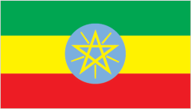

Ethiopia
Ethiopia is one of the oldest countries in the world and is famous for many important discoveries. One of the most significant discoveries is Lucy, a 3.2-million-year-old human ancestor fossil found in 1974, which helped scientists learn more about early human evolution. Ethiopia is also known as the birthplace of coffee, as coffee plants were first discovered growing naturally in the region of Kaffa.
The ancient Kingdom of Aksum left behind impressive monuments, coins, and stone obelisks that show Ethiopia's rich history and early civilization. These discoveries have made Ethiopia an important country for the study of human history, archaeology, and culture.
Cultures
- Colorful African print clothes
- habesha kemis
- boubous
- Head wraps